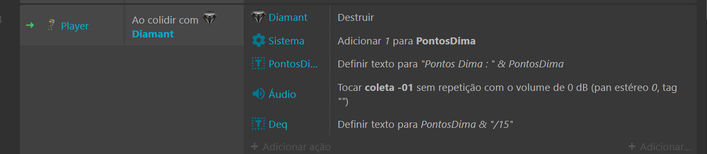

Games no construct 3
Olá meu nome é Lenilson autor desse site e tó aqui pra fala um pouco dos meus primeiros games pra vocês.
Vou falar do O Diamante Negro
meu primeiro game que fiz quando estava em um curso do senac gratuito oferecido pelo governo, o dimante negro é um jogo de plataforma feito no construct 3, um site pra desenvolvimento de games com progamação bem parecido com de bloco, mas com algumas diferenças.
O construct 3 é uma plataforma online muito simples de aprender, um atributos que podemos encontrar lá é a opção de colocar comportamento que faz com que um sprite adote um compotamento de ser um chão com colisor ou até o comportamento simples para o personagem de fazer o personagem andar prós lados e pular, um sistema basico de plataforma.
Construct 3

A página inicial do construct 3 bem simples de entender, você simplesmente pode criar um novo projeto e pode salvar na sua conta google direto no google drive, vocês podem acessar direto pelo smartphone como eu fiz na época pois eu não possuia uma maquina pra acessar o site, pelo smartphone é um pouco limitado, mas dá pra você ter uma grande noção de como funciona os Games.
The Black Diamond
O The Black Diamond tem esse nome por simples motivo do personagem ter que coletar os diamante pra poder atravessar os universos tecnologicos já que é um clima meio futurista.
Na imagem acima mostra como funciona a progamação dentro do construct, podemos observar que são condições que vão ser usado como gatilhos para ter uma determinada ação no game, acima basicamente você seleciona o os sprites e vai determinando o que eles vão fazer com evento e ações.
Esse site não é uma explicação com muitos detalhes sobre meu Game, nem muito menos de como o construc 3 funciona, mas vou deixar umas imagens da progamação do meu Game com explicações super basicas.
Progamação da colisão do portal.
Progamação dos controles, pois no smartphone é preciso.
Progamação da colisão dos diamantes.
Esse é o layout do meu 1° Game: The Black Diamond, o objetivo é passar pelos espinhos coletando os diamantes, tomando o minimo de dano possivel, se cair da plataforma ou se levar um dano consideravel dos espinhos o personagem volta pro inicio do game, tem que coletar no minimo 15 e chegar no portal para poder vencer a fase .
Esse é o layout do meu 2° Game: The Black Diamond 2, o objetivo do Game se referecia ao primeiro, que é pegar os diamantes porém em outro tipo de realidade, e com obstáculo diferente do que no Game 1, nesse Game as proprias plataforma são os obstáculos em vês dos espinhos do Game 1, as maiorias das plataformas vão descendo pouco a pouco quanto mais se mexer em cima delas, no game tem também possui o bônus que é uma plataforma especial que aulmenta a força do pulo, e possibilita a dar pulos duplos, o portal dessa vez é um buraco negro que começará a girar quando pegar a quantidade de minima de diamante, 15.
Tenho 2 Games do construct 3, o The Black Diamond e The Dlack Daimond 2 postados na itch.io é só clicar no nomes do games destacados que você estará sendo direcionado para testa-los. O controles para para jogar são as setas para direita, esquerda e para cima do teclado, caso não funcione use o mouse e clique na setas da tela do jogo.
Acessem também essa página do meu Game feito na unity